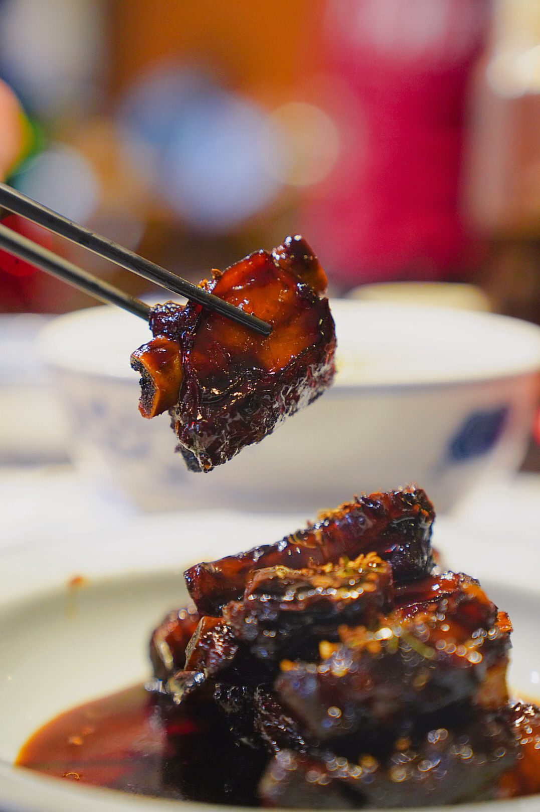
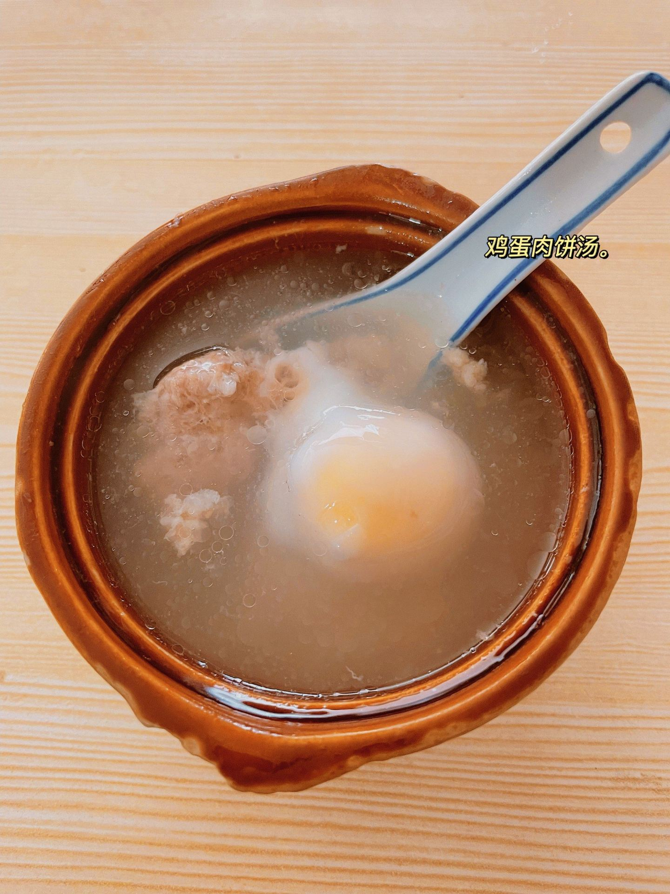

下午进景德镇
到了吃饭




- G902 深圳北开。16:22 到景德镇北。
- 住人民广场 / 浙江路一带，晚饭顺路。第二天包车去浮梁。
- 图味美小黄鱼·景德菜（浙江路店）。携程 4.6 / 164 评 / 人均 ¥74，有饺子粑。
住 · 景德镇第 1 晚店名等国庆房价再定。继续住城里，不住寒溪。

发给朋友看的就是这些。史子园现场没有公版图。下面茶垄是江南别处的参考，十月寒溪也是这种绿。马岩松那盏灯、羊毛卷圆窗，去小红书搜。


窑厂换成浮梁寒溪的茶山。10.02 上午走史子园茶垄，看马岩松那盏大地之灯，下午顺路古县衙。十月叶子仍是绿的，没有油菜花。三清山还是 10.06 早起赶金沙索道。南昌过夜去掉。10.07 从上饶回深圳。


卖点在南清园。东方女神和巨蟒出山看完，再走阳光海岸到西海岸栈道。携程 4.7 分、2.1 万条。门票 ¥120，金沙索道往返 ¥125。金沙上站离核心近。西海岸大约 4 公里栈道，大部分平。一线天 299 级台阶，有腿再下。索道常见 7:30 开、17:00 停上行，以当天景区告示为准。
2024 年 10 月 3 日金沙早上排过 1 万号，下山 3 小时，刮大风，有人喊退票。山就放在 10.05 入住、10.06 上山，错开 1 到 3 号。住索道脚下，开门就排。刮大风停索道就下山吃饭，不赌山顶酒店。


十月看晒秋。屋顶上晒辣椒和玉米，也有菊花。油菜花在三四月，石城红枫要十一月。索道上山，门票加往返索道大约 145 块。携程 4.6 分、2.3 万条。村里台阶多，天街偏商业。1 到 3 号篁岭日均超过 2 万人，这版 10.03 入住，4 号白天逛，仍会挤。不去李坑、江湾打卡。
下面茶垄不是寒溪拍的。史子园、大地之灯在 Commons 上 0 张。十月现场也是这种绿。


浮梁县臧湾乡寒溪村史子园。导航搜「浮梁会客厅」，比只搜大地之灯准。市区或景德镇北开车大约 35 到 45 分钟，约 30 公里。4 人包车去，返程网约车少。门票免费，不用预约，村是全天开的。艺术浮梁会客厅咖啡大约 10:00–17:00。
能做的事：沿茶垄游步道走，上山头看那盏灯。灯是钢架加白膜，罩着几棵树，12.3 米长。白天像茶海上一朵云。村里有羊毛卷（二楼圆窗）和丘下栗述。十月不是采茶季。有效游览大约 2 到 3.5 小时，再泡就空。清明 2024 单日到过大约 7000 人，国庆也会挤。携程寒溪 4.3 分，只有 6 条评。去哪儿建议 1–2 小时。对照被拿掉的陶阳里是 4.6 分、1.1 万条。
下午配浮梁古县衙，同一天，不绕瑶里。瑶里和后面篁岭太像，国庆 205 省道也堵。


城北大约 8 公里，景德镇北更近。携程 4.2 分、1548 条，票大约 ¥45。4 月 15 日到 10 月 7 日 08:10–18:00，17:00 停入。升堂上午有 10 点和 11 点，下午有 14:00 和 15:30。我们赶 14:00。停车场小车 ¥5。有电瓶车。真投诉：仿古街空、一个小时够逛。真赞：江南较完整的五品县衙，有的假期人反而不爆。
12306 于 2026-09-02 实查。国庆票还没开卖。时刻用 9.16 运行图。10.01 于 9.17 周四约 09:15 深圳北起售。回程从上饶走，上饶票常见 17:00 起售，10.07 对应大约 9.23。四人一起买，候补挂上。
| 日期 | 车次 | 时刻 | 人均二等 | 4人 |
|---|---|---|---|---|
| 10.01 | G902 深圳北 → 景德镇北 | 11:57–16:22 | ¥573 | ¥2,292 |
| 直达，4 小时 25 分。十点从家里出门够。 | ||||
| 10.03 | 景德镇北 → 婺源 | 约 27 分钟 | ¥24–26 | 约 ¥104 |
| G1452 13:31–13:59，或 G870 14:55–15:21。到站包车去篁岭。 | ||||
| 10.05 | 篁岭 → 三清山金沙 | 包车约 1.2–1.5 小时 | — | — |
| 不去上饶站再折返。金沙是东门，离南清园近。 | ||||
| 10.07 | G3141 上饶 → 深圳北 | 13:18–20:46 | ¥440 | ¥1,760 |
| 金沙到上饶站约 1.5–2 小时。上午下山，不赶第二场日出。备选 G1601 12:19–18:59（¥539），走这班要更早离开金沙。 | ||||
大交通往返人均大约 ¥1,013（573+440），四人大约 ¥4,052。省内高铁和包车另计。

